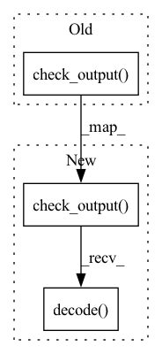

Pattern ID :25048
Before Change
raise Exception("CPU does not have memory")
else:
try:
output = subprocess.check_output(
"nvidia-smi --query-gpu=memory.total "
"--format=csv,nounits,noheader",
shell=True,
)
return int(output) * 1024 * 1024
except Exception:
raise Exception(
"Unable to get total memory of device. "After Change
else:
try:
output = (
subprocess.check_output(
"nvidia-smi --query-gpu=memory.free "
"--format=csv,nounits,noheader",
shell=True,
)
.decode( "utf-8")
.split()[self.idx]
)
return int(output) * 1024 * 1024
except Exception:In pattern: SUPERPATTERN
Frequency: 3
Non-data size: 3
Instances Fragment ID: 76864060
Project Name: nebuly-ai/nebullvm
Commit Name: 64d68365bbbcbc20fc201dee1d75409c2c8b3278
Time: 2023-02-13
Author: v.sofi@nebuly.ai
File Name: nebullvm/tools/base.py
M Class Name: Device
N Class Name: Device
M Method Name: get_free_memory(1)
N Method Name: get_free_memory(1)
M Parent Class:
N Parent Class:
M File Name: nebullvm/tools/base.py
N File Name: nebullvm/tools/base.py
M Start Line: 190
M End Line: 194
N Start Line: 195
N End Line: 202
Before Change
raise Exception("CPU does not have memory")
else:
try:
output = subprocess.check_output(
"nvidia-smi --query-gpu=memory.total "
"--format=csv,nounits,noheader",
shell=True,
)
return int(output) * 1024 * 1024
except Exception:
raise Exception(
"Unable to get total memory of device. "After Change
else:
try:
output = (
subprocess.check_output(
"nvidia-smi --query-gpu=memory.total "
"--format=csv,nounits,noheader",
shell=True,
)
.decode( "utf-8")
.split()[self.idx]
)
return int(output) * 1024 * 1024
except Exception: Fragment ID: 76864061
Project Name: nebuly-ai/nebullvm
Commit Name: 64d68365bbbcbc20fc201dee1d75409c2c8b3278
Time: 2023-02-13
Author: v.sofi@nebuly.ai
File Name: nebullvm/tools/base.py
M Class Name: Device
N Class Name: Device
M Method Name: get_total_memory(1)
N Method Name: get_total_memory(1)
M Parent Class:
N Parent Class:
M File Name: nebullvm/tools/base.py
N File Name: nebullvm/tools/base.py
M Start Line: 172
M End Line: 176
N Start Line: 173
N End Line: 180
Before Change
def git_describe():
// return human-readable git description, i.e. v5.0-5-g3e25f1e https://git-scm.com/docs/git-describe
if Path(".git").exists():
return subprocess.check_output( "git describe --tags --long --always", shell=True) .decode("utf-8")[:-1]
else:
return ""
After Change
// return human-readable git description, i.e. v5.0-5-g3e25f1e https://git-scm.com/docs/git-describe
s = f"git -C {path} describe --tags --long --always"
try:
return subprocess.check_output(s, shell=True, stderr=subprocess.STDOUT).decode() [:-1]
except subprocess.CalledProcessError as e:
return "" // not a git repository
Fragment ID: 76864063
Project Name: fcakyon/yolov5-pip
Commit Name: d972f314161801cd3c2b37be9fe62289498a4a09
Time: 2021-04-16
Author: 34196005+fcakyon@users.noreply.github.com
File Name: yolov5/utils/torch_utils.py
M Class Name: AnonimousClass
N Class Name: AnonimousClass
M Method Name: git_describe(1)
N Method Name: git_describe(0)
M Parent Class:
N Parent Class:
M File Name: yolov5/utils/torch_utils.py
N File Name: yolov5/utils/torch_utils.py
M Start Line: 49
M End Line: 54
N Start Line: 54
N End Line: 62